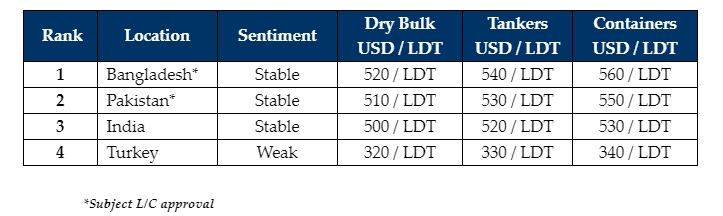

inWeekly Demolition Reports29/04/2024

On the back of freight markets that are finally facing their first set of 2024 jitters, the industryis gradually witnessing an increasing number of units being proposed for a recycling sale, all of which are being confirmed via the sudden influx of tonnage at the Indian and Bangladeshi waterfronts this week, just as the Pakistani market (as expected) starts to fall behind on its domestic arrivals and at this rate, India looks set to sneak past the Pakistani market in the rankings soon enough. Notwithstanding, the increased inflow of tonnage and subsequent (market / private) fixtures into the sub-continent recycling markets, there seems to be a slight mismatch in terms of price expectations vs. various market realities. Although there remain a limited number of open and able Recyclers with ready L/Cs to pick up units, this is proving increasingly troublesome for Owners & Cash Buyers who continue trying to conclude subpar, poorer condition units, and these vessels are not only seeing prices discounted in line with their reality, but some are even facing lower than expected levels – such sticklers have End Buyers become on the current crop of aged corrosion that has been greeting their way of late. As such, we are now witnessing a standoff between over exuberant Cash Buyers, Ship Owners, and increasingly reticent Ship Recyclers.
Meanwhile, after weakening in unison only last week, recycling nation currencies started to oddly firm up this week and Indian local steel plate prices continue their evergreen firmy-floppy dance as juicier tonnage starts to trickle back into the fray, we have noticed sub-continent Ship Recyclers seem to have kicked back their aggression to buy vessels at levels any firmer than prevailing fundamentals dictate, thereby increasingly cementing the idea that any sale at or above USD 600 / LT levels is unlikely to happen, especially as the industry heads towards deliveries in the traditionally quieter monsoon months – unless of course one with a lot of fuel shows up again. As such, during the first 4 months of the year, we have seen record low deals done amidst impressively performing freight sectors and ongoing geopolitical events that have helped vintage assets find continued profitability via further employment, resulting in recycling markets being choked of their usual share of the recycling tonnage that they (Recyclers) were historically accustomed to during this time of the year. Turkey, on the far end, though still quiet, is finally seeing its share of discussions at the bidding tables as fresh, small(er) LDT containers / general cargo units are now on offer.
Overall, the status quote for the recycling industry remains relatively twinned from that of last week, with sales at a premium still at large, and an existing demand that seems content waiting for the perfect vessel.
For week 17 of 2024, GMS demo rankings / pricing for the week are as below.

📄 Download PDF: Ship-recycling-market-insight-week-17-2024-Crop_of_Corrosion.pdfSource: GMS,Inc.https://www.gmsinc.net/gms_new/index.php/web